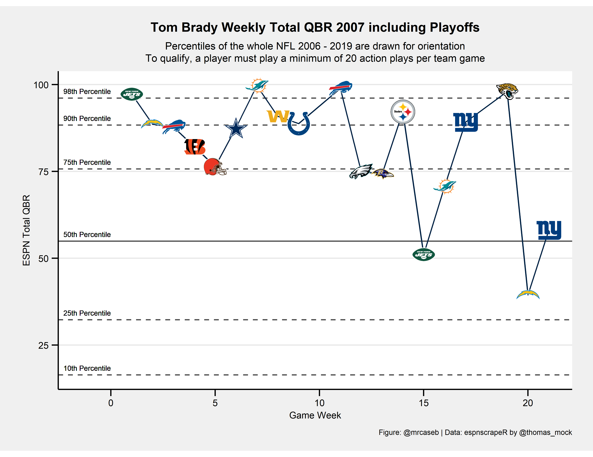
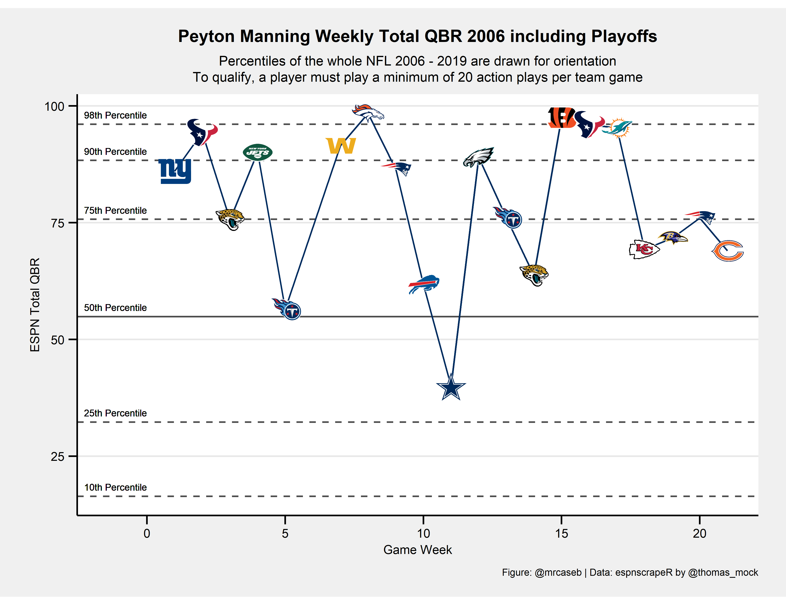
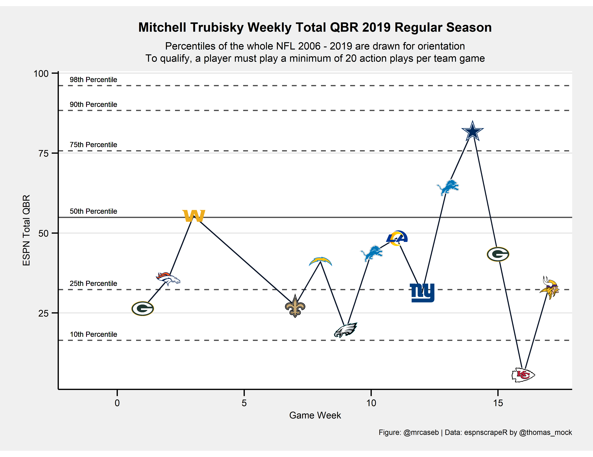

Table of Contents
Preface
When I first started working with ESPN’s Total QBR data I developed my own code to scrape the website. For this post I dug out the old (bad) code and wanted to make it prettier. But at the last minute I remembered something: there is this undervalued R package espnscrapeR developed and maintained by Thomas Mock. So instead of implementing the scraper by myself in this post I’ll show off, how to get all the data and save it locally for later reuse.
And as the title suggests we want to try out something new here: interactive plots!
How to get the data
We want to use the espnscrapeR in this section. So let’s install it by running the following code block.
if (!requireNamespace("remotes", quietly = TRUE)) {
install.packages("remotes")
}
remotes::install_github("jthomasmock/espnscrapeR")Now that espnscrapeR is installed we will load weekly Total QBR.
We’ll do this by writing the function get_week_qbr which loads the QBR data for a given week and season.
get_week_qbr <- function(s, wk) {
if (wk <= 17) {
out <- espnscrapeR::get_nfl_qbr(season = s, season_type = "Regular", week = wk)
} else if (wk > 17 & s != 2017) {
out <- espnscrapeR::get_nfl_qbr(season = s, season_type = "Playoffs", week = wk - 17)
}
}Then we call this function to actually do the job and save the output. Note: We call the function for the weeks 1 to 21 although the SB is week 22 (in ESPN’s convention) because of the Pro Bowl. The package automatically converts to week 22 for us.
The code is somewhat advanced and you may need to do some more background reading to understand it. The short version: we call the above function for all seasons between 2006 and 2019 and all available weeks in parallel running processes and bind everything together in a dataframe which get’s saved to disc for further usage.
library(dplyr)
future::plan("multiprocess")
# Total QBR data as available beginning in 2006
# Note: Playoffs 2017 are missing
seasons <- 2006:2019
all_qbr <-
furrr::future_pmap_dfr(purrr::transpose(purrr::cross2(seasons, 1:21)), get_week_qbr) %>%
dplyr::mutate(
game_week = as.numeric(game_week),
game_week = dplyr::if_else(season_type == "Playoffs", game_week + 17, game_week)
) %>%
dplyr::arrange(season, game_week)
# save to disk------------------------------------------------------------------
# binary
saveRDS(all_qbr, file = "all_qbr.rds")
# ASCII
readr::write_csv(all_qbr, "all_qbr.csv")Create some static weekly QBR plots
To better demonstrate the advantages of an interactive plot I want to start with some static charts by plotting weekly QBR for some selected QBs (the insane numbers). We want to plot multiple QBs so let’s create a function again.
Before we do this please note there are some Quarterbacks appearing with special team names (e.g. "DEN/KC") in the data because they changed their team within a season. Our new function won’t work for those QBs but I was too lazy to rewrite it because I honestly don’t care about those QBs. So please be careful when trying to run the code with one of the following names and corresponding seasons.
library(tidyverse)
readRDS("all_qbr.rds") %>%
dplyr::filter(stringr::str_length(team) > 3) %>%
dplyr::group_by(season, short_name, team) %>%
dplyr::summarise() %>%
knitr::kable("simple", align = "c")| season | short_name | team |
|---|---|---|
| 2011 | K. Orton | DEN/KC |
| 2013 | J. Freeman | MIN/TB |
| 2013 | M. Flynn | GB/OAK |
| 2014 | C. Keenum | STL/HOU |
| 2015 | M. Cassel | BUF/DAL |
| 2015 | R. Mallett | BAL/HOU |
| 2016 | M. Barkley | CHI/ARI |
| 2016 | M. Sanchez | DAL/DEN |
| 2017 | T.J. Yates | BUF/HOU |
| 2018 | M. Barkley | BUF/CIN |
| 2019 | J. Driskel | CIN/DET |
Now let’s write the plotting function plot_weekly_qbr. To call it we have to pass a year (season), the Quarterback name as listed in the ESPN data and our above saved QBR data.
plot_weekly_qbr <- function(year, QB, all_qbr_file) {
# Filter the QB we want to look at, modify team names and week numbers
# to fit nflfastR convention and add the team color of the QB
single_qbr <- all_qbr_file %>%
dplyr::filter(season == year & name == QB) %>%
dplyr::mutate(
team = dplyr::case_when(
team == "LAR" ~ "LA",
team == "WSH" ~ "WAS",
TRUE ~ team
),
game_week = dplyr::if_else(game_week > 21, 21, game_week)
) %>%
dplyr::left_join(
nflfastR::teams_colors_logos %>% select(team_abbr, team_color),
by = c("team" = "team_abbr")
)
# Search for the QBs opponents using the schedule function of nflfastR
# and add logos of the opponents
opponents <- nflfastR::fast_scraper_schedules(year) %>%
dplyr::filter(home_team == single_qbr$team | away_team == single_qbr$team) %>%
dplyr::mutate(
opp = dplyr::if_else(home_team == single_qbr$team, away_team, home_team)
) %>%
dplyr::left_join(
nflfastR::teams_colors_logos %>% select(team_abbr, team_logo_espn),
by = c("opp" = "team_abbr")
) %>%
dplyr::mutate(
grob = purrr::map(seq_along(team_logo_espn), function(x) {
grid::rasterGrob(magick::image_read(team_logo_espn[[x]]))
})
)
# Combine the QBR data of the chosen QB with the game data
chart <- single_qbr %>%
dplyr::left_join(opponents, by = c("game_week" = "week"))
# Set title string for later usage
if (max(chart$game_week) > 17) {
title_string <- glue::glue("{QB} Weekly Total QBR {year} including Playoffs")
} else {
title_string <- glue::glue("{QB} Weekly Total QBR {year} Regular Season")
}
# going to draw some quantile lines and combine them here
quantiles <- c(
quantile(all_qbr_file$qbr_total, 0.10),
quantile(all_qbr_file$qbr_total, 0.25),
quantile(all_qbr_file$qbr_total, 0.75),
quantile(all_qbr_file$qbr_total, 0.90),
quantile(all_qbr_file$qbr_total, 0.98)
)
chart %>%
ggplot(aes(x = game_week, y = qbr_total)) +
geom_hline(yintercept = quantiles, color = "black", linetype = "dashed", alpha = 0.7) +
geom_hline(yintercept = quantile(all_qbr_file$qbr_total, 0.50), color = "black", linetype = "solid", alpha = 0.7) +
geom_text(x = 0, y = 2 + quantile(all_qbr_file$qbr_total, 0.10), label = "10th Percentile", hjust = 1, size = 2) +
geom_text(x = 0, y = 2 + quantile(all_qbr_file$qbr_total, 0.25), label = "25th Percentile", hjust = 1, size = 2) +
geom_text(x = 0, y = 2 + quantile(all_qbr_file$qbr_total, 0.50), label = "50th Percentile", hjust = 1, size = 2) +
geom_text(x = 0, y = 2 + quantile(all_qbr_file$qbr_total, 0.75), label = "75th Percentile", hjust = 1, size = 2) +
geom_text(x = 0, y = 2 + quantile(all_qbr_file$qbr_total, 0.90), label = "90th Percentile", hjust = 1, size = 2) +
geom_text(x = 0, y = 2 + quantile(all_qbr_file$qbr_total, 0.98), label = "98th Percentile", hjust = 1, size = 2) +
geom_line(colour = chart$team_color) +
scale_x_continuous(
limits = c(-1.4, NA),
breaks = scales::breaks_pretty()
) +
ggpmisc::geom_grob(aes(x = game_week, y = qbr_total, label = grob), vp.width = 0.05) +
labs(
x = "Game Week",
y = "ESPN Total QBR",
caption = "Figure: @mrcaseb | Data: espnscrapeR by @thomas_mock",
title = title_string,
subtitle = "Percentiles of the whole NFL 2006 - 2019 are drawn for orientation\nTo qualify, a player must play a minimum of 20 action plays per team game"
) +
ggthemes::theme_stata(scheme = "sj", base_size = 8) +
theme(
plot.title = element_text(face = "bold"),
plot.caption = element_text(hjust = 1),
axis.text.y = element_text(angle = 0, vjust = 0.5),
legend.title = element_text(size = 8, hjust = 0, vjust = 0.5, face = "bold"),
legend.position = "top",
aspect.ratio = 1 / 1.618
) +
NULL
}Well, that’s a lot of code. Let’s see if it is working properly by choosing the insane 2007 season of Tom Brady (in terms of Total QBR the all-time best season).
all_qbr <- readRDS("all_qbr.rds")
plot_weekly_qbr(2007, "Tom Brady", all_qbr)
The other two in the all-time best seasons in terms of Total QBR are Peyton Manning in 2006 and Aaron Rodgers in 2011.
plot_weekly_qbr(2006, "Peyton Manning", all_qbr)
plot_weekly_qbr(2011, "Aaron Rodgers", all_qbr)
And what does it look like if the season wasn’t that good?
plot_weekly_qbr(2019, "Mitchell Trubisky", all_qbr)
Let’s make it interactive
The above plots are nice and all but actually we may miss a lot of information when looking at them. For example, we might want to know
- if the game was at home or on the road,
- what the result was or
- how many QB plays were counted for Total QBR.
Additionally we are only looking at a single season because plotting more will be a little overwhelming. Instead, it would be cool if you could watch a range of games from several seasons.
This is what we are going to do now. We will use the Plotly ggplot2 Library1 so you’ll have to install it if it’s not installed yet.
I will use a function again because I want to compare two Quarterbacks. Please note that the code looks similar to the above example but it differs in some points.
The additional information will be prompted if you hover with the mouse over an opponents logo. We have to create the shown text in this code block as well.
interactive_weekly_qbr <- function(first_year, last_year, QB, all_qbr_file) {
# Filter the QB we want to look at, modify team names and week numbers
# to fit nflfastR convention and add the team color of the QB
single_qbr <- all_qbr_file %>%
dplyr::filter(dplyr::between(season, first_year, last_year) & name == QB) %>%
dplyr::mutate(
team = dplyr::case_when(
team == "LAR" ~ "LA",
team == "WSH" ~ "WAS",
team == "OAK" ~ "LV",
TRUE ~ team
),
game_week = dplyr::if_else(game_week > 21, 21, game_week),
gm = 1:dplyr::n() # this is a running game number within the chosen era. We'll use it to plot
) %>%
dplyr::left_join(
nflfastR::teams_colors_logos %>% select(team_abbr, team_color),
by = c("team" = "team_abbr")
)
# Search for the QBs opponents using the schedule function of nflfastR
# and add logos of the opponents
opponents <- nflfastR::fast_scraper_schedules(first_year:last_year) %>%
dplyr::filter(home_team == single_qbr$team | away_team == single_qbr$team) %>%
dplyr::mutate(
opp = dplyr::if_else(home_team == single_qbr$team, away_team, home_team),
opp = dplyr::case_when(
opp == "OAK" ~ "LV",
TRUE ~ opp
),
# create string for game location
loc_desc = dplyr::if_else(
home_team == single_qbr$team,
glue::glue("vs. {away_team}"),
glue::glue("@ {home_team}")
),
# create string for game description
game_desc = dplyr::case_when(
week == 18 ~ "Wild Card",
week == 19 ~ "Divisional Round",
week == 20 ~ "Conference Championship",
week == 21 ~ "Super Bowl",
TRUE ~ "Regular Season"
)
) %>%
dplyr::left_join(
nflfastR::teams_colors_logos %>% select(team_abbr, opp_color = team_color, team_logo_espn),
by = c("opp" = "team_abbr")
)
# Combine the QBR data of the chosen QB with the game data
chart <- single_qbr %>%
dplyr::left_join(opponents, by = c("season", "game_week" = "week")) %>%
dplyr::mutate(
# create string for game outcome
outcome = dplyr::case_when(
team == home_team & home_result > 0 ~ "Won",
team == home_team & home_result < 0 ~ "Lost",
team == away_team & home_result > 0 ~ "Lost",
team == away_team & home_result < 0 ~ "Won",
home_result == 0 ~ "Tie",
TRUE ~ NA_character_
)
)
# Set title string for later usage
if (max(chart$game_week) > 17) {
title_string <- glue::glue("{QB} Weekly Total QBR from {first_year} to {last_year} including Playoffs")
} else {
title_string <- glue::glue("{QB} Weekly Total QBR from {first_year} to {last_year} Regular Season")
}
# going to draw some quantile lines and combine them here
quantiles <- c(
quantile(all_qbr_file$qbr_total, 0.10),
quantile(all_qbr_file$qbr_total, 0.25),
quantile(all_qbr_file$qbr_total, 0.75),
quantile(all_qbr_file$qbr_total, 0.90),
quantile(all_qbr_file$qbr_total, 0.98)
)
# Adding the logos to the interactive plots needs to be done in a different way
# Here we compute the list needed to add the later
image_list <- chart %>%
dplyr::transmute(
source = team_logo_espn,
xref = "x",
yref = "y",
x = gm,
y = qbr_total,
sizex = 7,
sizey = 7,
opacity = 0.9,
xanchor = "center",
yanchor = "middle"
) %>%
purrr::transpose()
plot <-
chart %>%
ggplot(aes(x = gm, y = qbr_total)) +
geom_hline(yintercept = quantiles, color = "black", linetype = "dashed", alpha = 0.7) +
geom_hline(yintercept = quantile(all_qbr_file$qbr_total, 0.50), color = "black", linetype = "solid", alpha = 0.7) +
geom_vline(xintercept = chart$gm[chart$game_week == 1] - 0.5, color = "black", linetype = "dotted", alpha = 0.7) +
geom_text(x = -0.5, y = 2 + quantile(all_qbr_file$qbr_total, 0.10), label = "10th Percentile", size = 3.5) +
geom_text(x = -0.5, y = 2 + quantile(all_qbr_file$qbr_total, 0.25), label = "25th Percentile", size = 3.5) +
geom_text(x = -0.5, y = 2 + quantile(all_qbr_file$qbr_total, 0.50), label = "50th Percentile", size = 3.5) +
geom_text(x = -0.5, y = 2 + quantile(all_qbr_file$qbr_total, 0.75), label = "75th Percentile", size = 3.5) +
geom_text(x = -0.5, y = 2 + quantile(all_qbr_file$qbr_total, 0.90), label = "90th Percentile", size = 3.5) +
geom_text(x = -0.5, y = 2 + quantile(all_qbr_file$qbr_total, 0.98), label = "98th Percentile", size = 3.5) +
geom_line(color = chart$team_color) +
geom_point(
# The text aesthetics in here are used for the tooltip text in the plotly object
aes(text = glue::glue(
"Season: {season}\nWeek: {game_week} ({game_desc})\n{outcome} {away_score}:{home_score} {loc_desc}\nTotal QBR: {qbr_total}\nNumber of QB plays: {qb_plays}"
)),
color = chart$opp_color,
size = 0.05
) +
scale_x_continuous(
limits = c(-1.4, NA),
breaks = scales::breaks_pretty()
) +
# Subtitle and caption labs don't work in the plotly object so I have removed them
# and added them manually to the object using plotly::layout()
labs(
x = glue::glue("Game Number in Given Era ({first_year}-{last_year})"),
y = "ESPN Total QBR"
) +
theme_bw() +
NULL
# The interactive part is done with plotly
plotly::ggplotly(plot, tooltip = "text") %>%
plotly::layout(
title = list(text = glue::glue("{title_string}<br><sup>Percentiles of the whole NFL 2006 - 2019 are drawn for orientation.</sup>")),
margin = list(t = 50),
images = image_list
) %>%
plotly::rangeslider(start = -3, end = min(30.5, max(chart$gm) + 0.5), bgcolor = "#D3D3D3", thickness = 0.08)
}Now we are ready to call the function for specific Quarterbacks and seasons. I don’t want to do overkill so I am just doing three seasons for two Quarterbacks from the 2017 Draft.
library(plotly)
interactive_weekly_qbr(2017, 2019, "Patrick Mahomes", all_qbr)
interactive_weekly_qbr(2017, 2019, "Mitchell Trubisky", all_qbr)